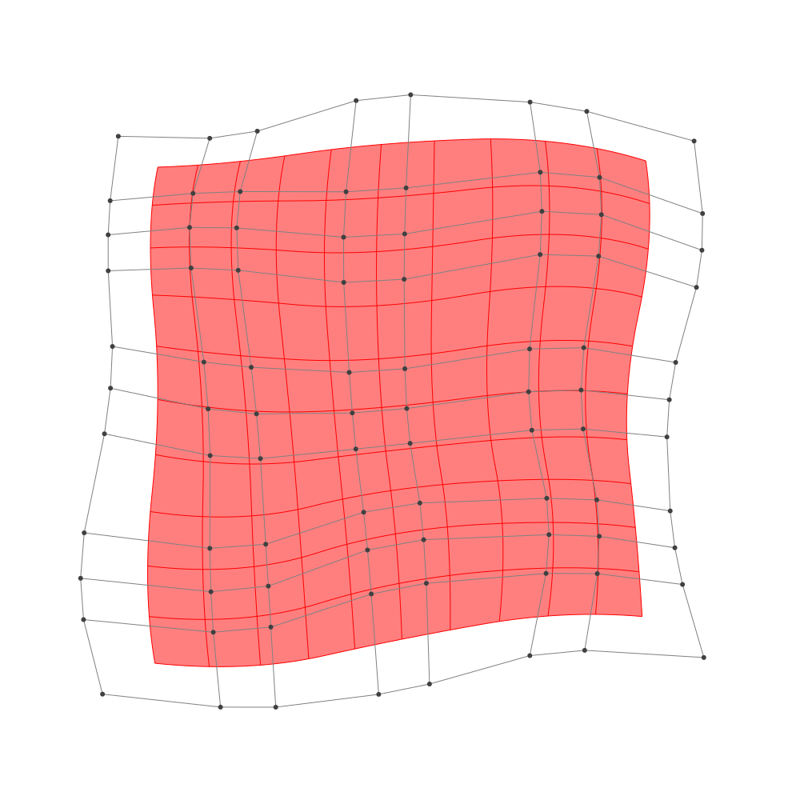

Refinement
BasicBSpline.refinement — FunctionRefinement of B-spline manifold with given B-spline spaces.
julia> p = 2 # degree of polynomial2julia> k = KnotVector(1:8) # knot vectorKnotVector([1, 2, 3, 4, 5, 6, 7, 8])julia> P = BSplineSpace{p}(k) # B-spline spaceBSplineSpace{2, Int64}(KnotVector([1, 2, 3, 4, 5, 6, 7, 8]))julia> rand_a = [SVector(rand(), rand()) for i in 1:dim(P), j in 1:dim(P)]5×5 Matrix{StaticArrays.SVector{2, Float64}}: [0.549522, 0.398796] [0.00187201, 0.259254] … [0.730614, 0.220484] [0.652008, 0.151232] [0.544875, 0.0272059] [0.525563, 0.0947015] [0.605589, 0.202272] [0.404857, 0.837156] [0.312201, 0.956454] [0.304444, 0.908482] [0.83166, 0.847923] [0.411846, 0.602966] [0.856774, 0.807557] [0.111379, 0.611684] [0.465329, 0.107375]julia> a = [SVector(2*i-6.5, 2*j-6.5) for i in 1:dim(P), j in 1:dim(P)] + rand_a # random5×5 Matrix{StaticArrays.SVector{2, Float64}}: [-3.95048, -4.1012] [-4.49813, -2.24075] … [-3.76939, 3.72048] [-1.84799, -4.34877] [-1.95512, -2.47279] [-1.97444, 3.5947] [0.105589, -4.29773] [-0.0951434, -1.66284] [-0.187799, 4.45645] [1.80444, -3.59152] [2.33166, -1.65208] [1.91185, 4.10297] [4.35677, -3.69244] [3.61138, -1.88832] [3.96533, 3.60738]julia> M = BSplineManifold(a,(P,P)) # Define B-spline manifoldBSplineManifold{2, (2, 2), StaticArrays.SVector{2, Float64}, Tuple{BSplineSpace{2, Int64}, BSplineSpace{2, Int64}}}((BSplineSpace{2, Int64}(KnotVector([1, 2, 3, 4, 5, 6, 7, 8])), BSplineSpace{2, Int64}(KnotVector([1, 2, 3, 4, 5, 6, 7, 8]))), StaticArrays.SVector{2, Float64}[[-3.9504778927490913, -4.101203691755789] [-4.498127987876662, -2.2407461845304795] … [-3.919497197045004, 2.050172190047381] [-3.7693859658441284, 3.7204838058127034]; [-1.8479920549268836, -4.348768116550194] [-1.955124686328851, -2.4727940761627045] … [-2.446072874165499, 2.276449253230572] [-1.9744367784255825, 3.5947014866672644]; … ; [1.804444468402706, -3.591518346442023] [2.331659850127716, -1.6520772210800456] … [2.25979152351607, 2.493805722866544] [1.911846423808976, 4.1029659274871015]; [4.356774382764788, -3.6924426293949884] [3.611378587422166, -1.8883159084011725] … [4.15029603417093, 1.7541878261078896] [3.965329104223289, 3.60737521291117]])
h-refinemnet
Insert additional knots to knot vector.
julia> k₊=(KnotVector(3.3,4.2),KnotVector(3.8,3.2,5.3)) # additional knotvectors(KnotVector([3.3, 4.2]), KnotVector([3.2, 3.8, 5.3]))julia> M_h = refinement(M,k₊=k₊) # refinement of B-spline manifoldBSplineManifold{2, (2, 2), StaticArrays.SVector{2, Float64}, Tuple{BSplineSpace{2, Float64}, BSplineSpace{2, Float64}}}((BSplineSpace{2, Float64}(KnotVector([1.0, 2.0, 3.0, 3.3, 4.0, 4.2, 5.0, 6.0, 7.0, 8.0])), BSplineSpace{2, Float64}(KnotVector([1.0, 2.0, 3.0, 3.2, 3.8, 4.0, 5.0, 5.3, 6.0, 7.0, 8.0]))), StaticArrays.SVector{2, Float64}[[-3.9504778927490913, -4.101203691755789] [-4.279067949825633, -2.9849291874206028] … [-3.896980512364873, 2.3007189324121793] [-3.7693859658441284, 3.7204838058127034]; [-2.5838620981646567, -4.262120567872152] [-2.7406503443882135, -3.139794615603716] … [-2.9079060282006384, 2.4134732337042117] [-2.602668994022074, 3.6387252983681684]; … ; [1.804444468402706, -3.591518346442023] [2.120773697437712, -2.4278536712248364] … [2.207599758560006, 2.7351797535596276] [1.911846423808976, 4.1029659274871015]; [4.356774382764788, -3.6924426293949884] [3.909536905559215, -2.6099665967986985] … [4.122550994678784, 2.0321659341283818] [3.965329104223289, 3.60737521291117]])julia> save_png("2dim_h-refinement.png", M_h) # save image
Note that this shape and the last shape are identical.
p-refinemnet
Increase the polynomial degree of B-spline manifold.
julia> p₊=(1,2) # additional degrees(1, 2)julia> M_p = refinement(M,p₊=p₊) # refinement of B-spline manifoldBSplineManifold{2, (3, 4), StaticArrays.SVector{2, Float64}, Tuple{BSplineSpace{3, Int64}, BSplineSpace{4, Int64}}}((BSplineSpace{3, Int64}(KnotVector([1, 2, 3, 3, 4, 4, 5, 5, 6, 6, 7, 8])), BSplineSpace{4, Int64}(KnotVector([1, 2, 3, 3, 3, 4, 4, 4, 5, 5, 5, 6, 6, 6, 7, 8]))), StaticArrays.SVector{2, Float64}[[-3.7186212159053844, -3.676703530200106] [-3.955736474825367, -2.7451817321572687] … [-3.6230017994090744, 2.4907937969222167] [-3.5211524450970497, 3.2966113229441594]; [-2.243544413402978, -3.8391603912026793] [-2.3338205177477604, -2.902466415439115] … [-2.587131440066231, 2.5829686086562393] [-2.3781071309078596, 3.271433007235305]; … ; [2.3086111671831553, -3.1291168791090302] [2.4661679266233563, -2.1706725167920538] … [2.4946800907717503, 2.782993923819521] [2.3342890550648248, 3.6079096246450266]; [3.7980625805799386, -3.218952135139035] [3.5314156143309283, -2.305612574278112] … [3.782179459501566, 2.330586523010872] [3.6761144803811248, 3.2368446178972854]])julia> save_png("2dim_p-refinement.png", M_p) # save image

Note that this shape and the last shape are identical.